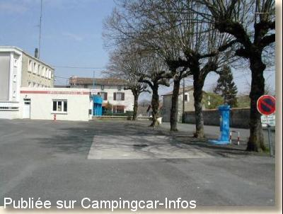

ASN = Aire de services avec stationnement nuit possible de :
SAUZÉ VAUSSAIS
(N° 623)
Accès/adresse :
Place des Halles
Parking de la Poste
79190 SAUZÉ VAUSSAIS
Parking de la Poste
79190 SAUZÉ VAUSSAIS
Latitude : (Nord) 46.13531° Décimaux ou 46° 8′ 7′′
Longitude : (Est) 0.10583° Décimaux ou 0° 6′ 20′′
Tarif : 2010
Stationnement gratuit
Services : 3 €
Type de borne : FLOT BLEU
Services :


Tous commerces
Autres informations :
Ouvert de mars à novembre
Tel : +33(0)549 076 053
http://www.mellecom.fr/sauze/
http://www.mairie-sauze-vaussais.fr/

Le 15/03/2003 par Patrick LEPILLER
de
CHAU77
le 17/07/2006 :
La borne était en panne lors de mon passage. Malgré l'aspect peu engageant de la place (goudron, poste + pompiers), nous y avons passé une nuit calme. Bien pour une halte nocturne.
La borne était en panne lors de mon passage. Malgré l'aspect peu engageant de la place (goudron, poste + pompiers), nous y avons passé une nuit calme. Bien pour une halte nocturne.